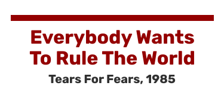
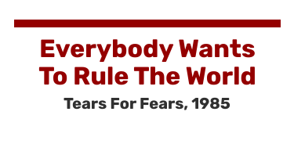
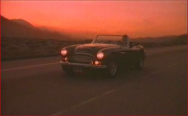

“Il n’y a aucun moyen de revenir en arrière”, voici comment débute cette chanson au succès planétaire sortie en mars 1985. Cette chanson me tient particulièrement à coeur, il s’agit d’une des premières musiques que j’ai connu et apprécié écouter. Détentrice de nombreuses récompenses comme le Brit Award en 1986 et du Disque d’Argent au Royaume-Uni, lieu d’écriture de la chanson, mais également numéro 1 des ventes aux États-Unis et au Canada ainsi que teneuse de places majeures dans les charts des autres pays.
Écrite à l’époque de l’apogée de la Guerre Froide, opposant les États-Unis et la Russie, le titre de la chanson aurait été à la base “Tout le monde veut partir à la guerre”, cependant le groupe ne ressentait pas ce titre et préférait quelque chose de moi didactique. Bon nombre des paroles font ainsi référence à une situation tendue, mais nous pouvons malgré tout y observer un sens totalement différent. Il s’agit en effet d’une critique de la luxure pour le pouvoir et le contrôle et ainsi des conséquences destructrices qui en résultent. On compare généralement cette musique avec le livre classique « 1984 » de Georges Orwell.
De mon point de vue, j’ai toujours interprété cette musique différemment par rapport à son sens initial. La soif de pouvoir et de gouverner me représentent, certes, mais la volonté d’écraser le monde m’en éloigne. Il faut plutôt dire que cette musique me fait repenser à l’enfance et à époque que je n’ai pas vécu (les eighties !). Avec une mélodie nostalgique et un tempo plutôt rapide, la musique nous bascule dans une époque révolue et inconnue. Nous avons l’impression de revivre les bons moments de notre existence. Arrêtez vous quelques instants dans votre poussée d’ambition et rappelez vous les bons souvenirs de votre vie. Prenez le temps d’écouter cette musique et concentrez vous sur ce qui vous motive actuellement, et comment vous pouvez parvenir à vos objectifs.
Retour en haut !